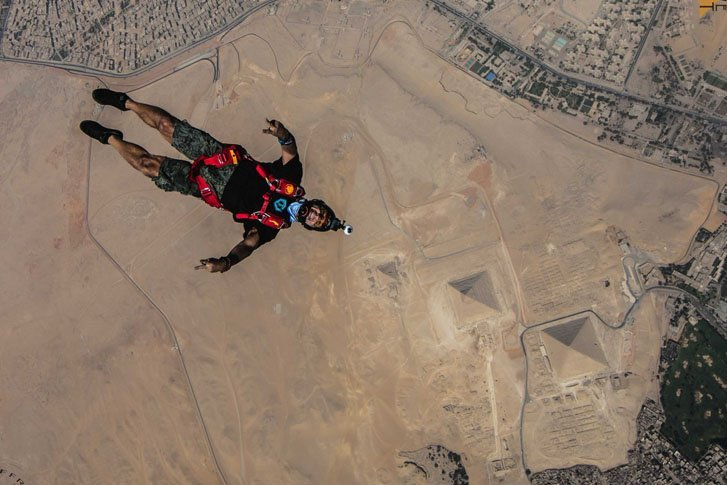
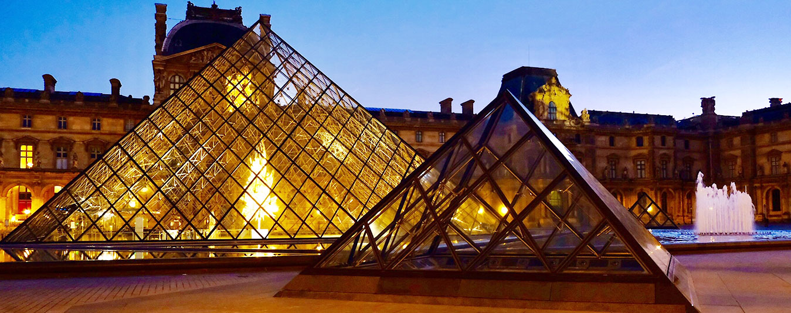
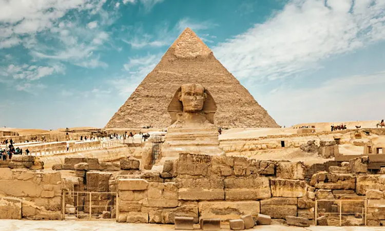
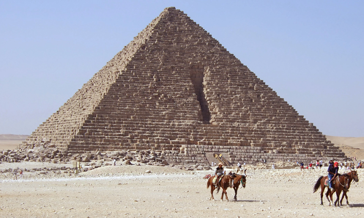
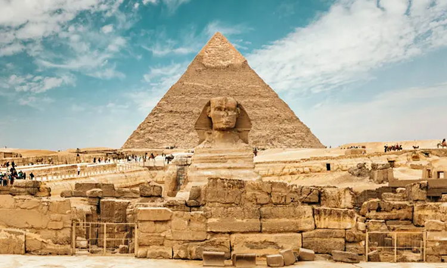
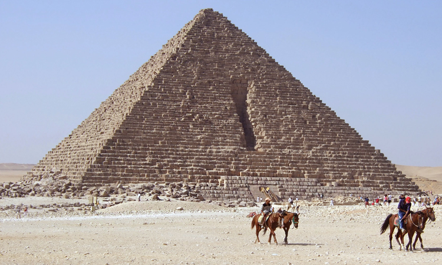

“Man fears Time, But Time fears the Pyramid.”
It is an Arabic proverb that gives us hints about the Egyptian
Pyramids’ power. The pyramids of Egypt are built with
unexplainable methods and techniques. Consequently,
multiple questions revolve around it.
But important questions are how the pyramids of Egypt were made and
who created them. And the more we try to solve these questions,
the more we find ourselves in the puzzle.
Egyptians did not leave any solid clue about how pyramids were made.
However, they left the space for theory, assumptions,
and questions for all of us. Undoubtedly,
witnessing such a structure on your own is a lifetime experience.
Top 7 Pyramids in Egypt
1.Pyramid of Khufu 2.Pyramid of Khafre3.Pyramid of Menkaure
you must try sky diving in egypt over the pyramids
Skydiving Egypt is a lifetime experience where the adrenaline meets history.
Skydive in the Pyramids of Giza and experience the most unique skydive jump spot in the world.
Holiday Tours in cooperation with Skydive Egypt are proud to announce that Tandem Jumps
are now available for everyone.you can book your ticket from
egypt sky diving

Grand Egyptian Museum

Scheduled to be open in 2022, Grand Egyptian Museum, also known as Giza Museum, will be the largest
archeological museum in the world displaying the biggest collection of King Tutankhamun artifacts,
among others.
BESIX Group, a Belgian company, and Orascom Construction, an Egyptian company are behind the construction
of this grand museum. Apart from this, the mesmerizing architecture and the size of this museum will
leave you fascinated. Shaped like a chamfered triangle, it has been built with a translucent stone wall
and the entrance of the Grand Egyptian Museum has imposing statues that will take your breath away.
After the announcement, it is expected to receive two to three million visitors annually.
And why not? It houses the largest collection of Egyptian artifacts the world has ever seen!
Overview of Grand Egyptian Museum
location
Giza
Address
Alexandria Desert Rd, Kafr Nassar, Al Haram, Giza Governorate, Egypt
 


